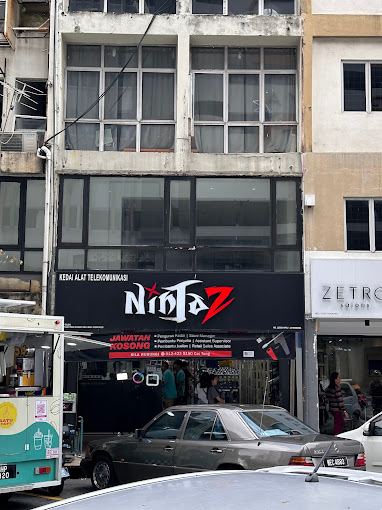
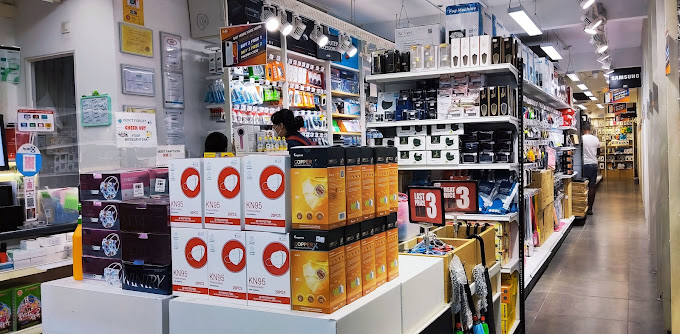
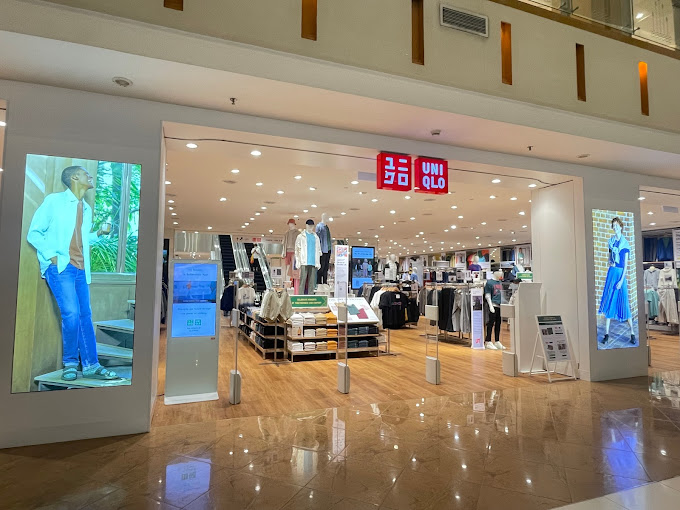
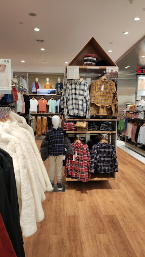

Honestly, I'm not really a shopping person. So to compensate, I'll be listing some shops nearby my place that I'm familiar with. Sorry.
Ninjaz SS15| UniqloIt's an electronics store with all sorts of items. There's headphones, earphones (I bought mine there), phone protectors (also bought that), speakers, selfie sticks, loudspeakers, power cables; the list goes on and on. Oh, and they also repair your phone screens. Overall, it's good place to buy technological stuff.
 Not just a clothing store, its where the majority of my clothes come from. While there are many branches around Subang, the one I'm talking about is in Sunway Pyramid. You know, the mall with a variety of shops to choose from. And like its parent mall, Uniqlo also has a bounty of shirts, pants, coats and everything in between. All beautiful and comfortable at the same time.
 